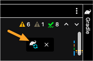

12.1. Gradle¶
By now you have created at least two Spring projects using Gradle. If you recall, Spring is the framework that will enable us to create an MVC application. When we created each project, we selected “Gradle Project”, but what is Gradle?
Gradle is an automated build tool that handles tasks like:
Managing dependencies
Testing protocols
Packaging the executable program for deployment.
So far we have included Gradle in our Spring Boot projects.
Note
You can also import Gradle using the terminal. Instruction on that is beyond the scope of this class. Here is documentation on this process if you are curious.
12.1.1. How Gradle Works¶
A Gradle build represents one or more projects.
Projects are craeted from a series of tasks.
Gradle manages tasks based on their function in the build.
Some tasks run tests, some compile, etc.
Gradle organizes these tasks in the build.gradle file.
12.1.1.1. build.gradle¶
The build.gradle file is the project build script.
Gradle will refer to this file as it runs through the task list to build the application.
You can code tasks into this file or you can import tasks into this file.
If we are using external tasks, we use methods to group tasks by functionality in this file. Tasks call the methods to execute a task or series of tasks to build the project. You are also allowed code directly in the build file, but this is more common if you are creating a Gradle project from scratch.
Note
Spring Boot populated this file as it initialized your hello-spring and hello-spring-demo builds.
Open your build.gradle file and look at each section.
12.1.1.1.1. tasks and plugins¶
As stated earlier, Gradle builds a project by running tasks. These tasks are kept in a task method that calls them when needed. The task method is where you create tasks.
Note
hello-spring has a task method that runs a test.
Often you will import tasks from an external resource as plugins. Plugins contain any necessary tasks and scripts to extend a project’s capabilities. Plugins often need dependencies and external repositories.
Note
Both of your Spring Boot framework projects contain plugins.
12.1.1.1.2. dependencies¶
dependencies are external code libraries used by tasks to build your project.
Gradle often groups related dependencies together in configurations.
In the dependencies method, the configuration name proceeds the dependency information.
Note
Both of your hello-spring and hello-spring-demo projects have three dependencies.
Note that each dependency has its own configuration name.
12.1.1.1.3. configurations¶
Some projects contain a stand-alone configurations method.
This method bundles dependencies together based on their role in the build.
Dependency configurations can extend from one another, reducing redundancies within your code.
Note
In the hello-spring-demo project, the build.gradle file contains a configurations method.
The hello-spring project does not.
12.1.1.1.4. repositories¶
Where do we get the source code if dependencies are external libraries?
It comes from an external repository site, such as Maven Central.
Maven Central is a repository website that contains files for dependencies.
This is not the only external repository. Other repositories work the same as Maven Central.
In the build.gradle file we link up with Maven Central by using the repositories method.
Note
You will see repositories in both of your Spring Boot projects.
12.1.1.1.5. tests¶
The test method holds any necessary configurations and dependencies needed for testing.
Note
Both of your projects have tests. One uses a test method while the other uses the test as part of a task.
12.1.2. Troubleshooting Tips¶
- My dependencies won’t build
We are using IntelliJ as our IDE to build our Gradle projects for this class. IntelliJ’s built-in IntelliSense should prompt you to refresh your build.gradle whenever you change a file. You should see a small icon appear in the top right corner of the build.gradle file. If you click on the icon, it will refresh your build.
The refresh icon should appear whenever you make changes to your project.¶
If you update build.gradle and the icon does not appear, you can manually refresh the build. Mac Users try Shift + Command + I and Windows/Linux Users try Control + Shift + O.
For more on Gradle and IntelliJ, visit this website.
- I’ve refreshed, but they still won’t build
Read IntelliJ’s documentation on Maven.Importing
If using 2019 IntelliJ, this article might offer some help. Check out tip #4. Not sure which version you are using, look for the About… menu option to verify which version you are using.
12.1.3. Check Your Understanding¶
Question
- From where do
dependenciesaccess their source code? An external repository such as Maven Central
Internal code within a Class you created